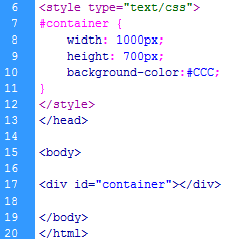

Positioneren
Waar we vorige periode nog steeds bezig waren met het maken van losse opdrachten, gaan we nu verder met het ontwikkelen van een website. Elke website heeft een soort van basis. De structuur van de website wordt hiermee bepaald. Bij het ontwerpen in Photoshop of een ander grafisch programma houdt je hier al rekening mee.
Je mag er standaard vanuit gaan dat een website een breedte heeft van 1000px. Hoogte is natuurlijk afhankelijk van de hoeveelheid content er op je website te vinden is. Hieronder staat een voorbeeld staat de structuur van een basis website.
| Voorbeeld 1 |
Dit zou je basis kunnen zijn. Uiteraard ben je vrij om je site zo in te delen als je zelf wilt. Het lijkt een beetje op een grote tabel. Als je zou willen kun je de structuur van je website ook indelen met een tabel, dit wordt echter afgeraden. Het positioneren van je website op de pagina gaat namelijk makkelijker als je met divisies werkt dan een tabel.
Divisies
De laatste les van vorige periode hebben we gewerkt met classes. Deze maakte je in de CSS aan door een punt voor de naam van het attribuut te plaatsen. Een ID (welke je koppelt aan een divisie) maak je aan door voor het attribuut, in de CSS, een hekje (#) te zetten. In de CSS geef je vervolgens het formaat van je divisie aan.
Het verschil tussen een class en een ID is niet zoveel. Het grote verschil is dat een class meerdere malen op de site kan worden toegevoegd. Een ID komt maar één keer voor op je website. Echter zullen de meeste browsers ook meerdere dezelfde ID's gewoon weergeven. Als vuistregel houden we aan dat we een class gebruiken voor de opmaak van de tekst. En een ID voor het benoemen van de divisies. Dit geeft het meeste overzicht in je CSS. Een voorbeeld van een ID staat hieronder.
| Voorbeeld 2 |
|  |
Je verzint dus zelf een naam in de CSS. Daarin geef je aan hoe breed en hoog je divisie is. Eventueel, om te testen of je divisie werkt en de kijken waar die zich bevindt, geef je de divisie een achtergrondkleur. Vervolgens plaats je tussen het <body> element <div id=”naam_van_id”></div>
Je ziet in voorbeeld 1 dat helemaal bovenaan de pagina container staat. Dit doen we met opzet. Binnen deze container gaan we namelijk al onze divisies plaatsen. Dit doen we zodat we straks de website mooi uit kunnen lijnen. We hebben deze in voorbeeld2 ook meteen een hoogte gegeven. Je weet nu natuurlijk nog niet wat de hoogte van de complete website gaat zijn, maar om er mee te testen is dit het makkelijkste.
| Opdracht 1: container maken |
|
Open een nieuw HTML 5 bestand.
Sla het bestand op als Opdracht16-1.html. |
Zoals gezegd geldt deze container als basis. Hier binnen gaan we de overige divisies plaatsen. Je werkt altijd van linksboven, naar rechtsonder. Dat wil zeggen dat als we naar voorbeeld 1 kijken. We eerste de container aanmaken, daarbinnen de header, menu, content en sluitbalk. Ook in die volgorde. Een voorbeeld hiervan staat op de volgende pagina.
| Voorbeeld 3 |
| Opdracht 2: header maken |
|
Open bestand opdracht16-1.html
Sla het bestand op als opdracht16-2.html. |
Om het overzichtelijk te houden is het aan te raden om een stukje in te springen in de html. Zie hiervoor het voorbeeld 3. De volgende divisie die we gaan maken is het menu.
| Opdracht 3: header maken |
|
Open bestand opdracht16-2.html
Sla het bestand op als opdracht16-3.html. |
Je ziet dat je menu binnen de container is geplaatst en dat je onderaan de pagina nog een stukje over hebt. Dit klopt want de pagina is 800px hoog, min de header van 150px en het menu van 600px houden we nog 50px over. Deze gebruiken we straks voor de sluitbalk. Eerst gaan de content plaatsen.
| Opdracht 4a: content maken |
|
Open bestand opdracht16-3.html
Sla het bestand op als opdracht16-4.html. |
Je ziet dat het 1 grote chaos is geworden. Waar straks steeds de divisies op de juiste plaats kwamen te staan, is dat nu niet meer het geval. We willen namelijk dat content naast menu komt te staan. De browser weet dit echter niet en plaatst, tenzij wij anders opgeven, elke divisie netjes onder elkaar. Nu gaan we dus echt positioneren.
We moeten de browser vertellen dat twee divisies (menu en content) naast elkaar horen. Dit doen we met float. Aan float kun je 2 waardes koppelen, left of right. Wat float doet is kijken naar de beschikbare ruimte en dan elk element die de waarde float:left; heeft, zo ver mogelijk naar links positioneren. In het geval van float:right; wordt alles naar rechts gepositioneerd.
In ons geval past de content divisie nog precies naast menu. Dus het is nu de bedoeling dat je in de css bij zowel de divisie menu als content de float:left; toevoegt.
| Opdracht 4b: content maken |
|
Open bestand opdracht16-4.html
Sla het bestand op als opdracht16-4.html. |
Als de content divisie van hierboven breder zou maken, dan zal deze alsnog onder menu worden geplaatst. Het moet allemaal namelijk precies passen. Mocht je divisie dus nog steeds niet naast menu verschijnen, dan heb je kans dat je de totale breedte (1000px van containter) hebt overschreden.
| Opdracht 5: sluitbalk maken |
|
Open bestand opdracht16-4.html
Sla het bestand op als opdracht16-5.html. |
Je bent website moet er dan uitzien zoals het voorbeeld hier onder.
Om positioneren en float goed te begrijpen moet je veel oefenen met het maken van divisies. Daarom gaan we nog een keer een voorbeeldstramien maken maar nu niet stap voor stap maar alle gegevens in één opdracht. Kijk goed waar de float wel of niet aan toegevoegd moet worden.
| Voorbeeld 4 |
| Opdracht 6: complete opdracht |
|
Probeer voorbeeld 4 zo goed mogelijk na te maken. De tekst is er met photoshop in gezet, het gaat dus puur om de vlakken. De kleuren mag je zelf kiezen. Open een nieuw HTML 5 bestand.
Sla het bestand op als Opdracht16-6.html. |